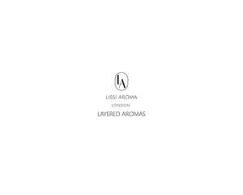
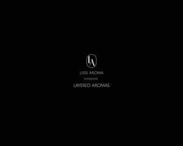

Trade Mark Journal No.2025/020 16 May 2025
UK00004195237 27 April 2025 (3,4)
Mark 1

Mark 2

- Class 3
- Perfumes; Fragrances; Oils for perfumes and scents; Perfumery and fragrances; Aromatics for perfumes; Potpourris [fragrances]; Perfume oils; Liquid perfumes; Colognes; Fragrances for automobiles; Natural oils for perfumes; Musk [perfumery]; Fragrance sachets; Amber [perfume]; Solid perfumes; Room fragrances; Scented soaps; Aromatherapy lotions; Scented body lotions and creams; Moisturisers [cosmetics]; Scented body lotions; Skin fresheners [cosmetics]; Scented sachets; Fragrance emitting wicks for room fragrance; Household fragrances; Room fragrancing products; Fragrance for household purposes; Scents; Body fragrances; Body scrub; Body wash; Body lotion; Cosmetic body scrubs; Scented body spray; Scented body creams; Body butters; Body creams; Body mist; Soaps for body care; Skin lotion; Moist wipes impregnated with a cosmetic lotion; Pre-moistened cosmetic wipes; Moisturizing body lotions; Perfumed body lotions [toilet preparations]; Hand soaps; Hand creams; Moist paper hand towels impregnated with a cosmetic lotion; Hand cleansers; Hand oils (Non-medicated -); Body scrubs; Body lotions; Body soap; Body mask lotion; Body scrubs [cosmetic]; Face and body lotions; Body and facial oils; Body moisturisers; Skin cleansing foams; Facial wash; Face wash; Body cream; Non-medicated foot cream; Face creams; Face and body creams; Skin cream; Essential oils; Essential oils as perfume for laundry purposes; Cuticle oils.
- Class 4
- Scented candles; Aromatherapy fragrance candles; Musk scented candles; Perfumed candles; Candles (Perfumed -); Fragranced candles; Candle wax; Tea light candles; Candles; Tealight candles; Candles and wicks for candles for lighting; Fruit candles; Soy candles.
LISSI AROMA LTD